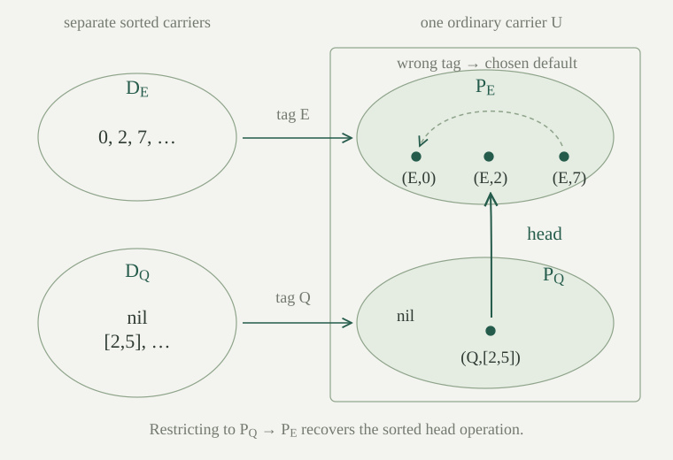

Fix a nonempty set \(S\) of sorts. A many-sorted signature with functions specifies relation symbols with finite lists of argument sorts, as in the relational signature, and function symbols with profiles
The profile requires the \(i\)-th input to have sort \(s_i\) and the result to have sort \(s\). A constant of sort \(s\) is a function symbol with no arguments and result sort \(s\). All symbol collections are sets; no countability assumption is made. Equality is available between terms of the same sort. Relations of arity zero are allowed and express truth values.
For a running example use sorts \(E\) for elements and \(Q\) for lists, with \(\mathsf{nil}:Q\), \(\mathsf{cons}:(E,Q)\to Q\), and \(\mathsf{head}:Q\to E\). The signature declares where operations may be used. It does not yet assert any equation about lists or prescribe what \(\mathsf{head}(\mathsf{nil})\) means.
In a finite sorted context \(\gamma=(s_0,\ldots,s_{n-1})\), a term of sort \(s\) is built by two rules. A variable \(z_i\) has its declared sort \(s_i\). If \(f:(r_0,\ldots,r_{k-1})\to s\) and each \(t_i\) has sort \(r_i\), then \(f(t_0,\ldots,t_{k-1})\) has sort \(s\). The zero-argument case supplies constants. There are no other terms.
An atomic sorted formula is \(t=u\) for terms of the same sort, or \(R(t_0,\ldots,t_{k-1})\) with the required argument sorts. Build sorted formulas with functions from these atoms, falsity, implication, and sorted universal quantification. A quantifier appends its placeholder: a body in \((\gamma,s)\) gives \(\forall z_n:s\,A\) in \(\gamma\). Other classical connectives and existence retain their usual abbreviations. A sentence has empty context.
For \(x:E\) and \(q:Q\), the term \(\mathsf{head}(\mathsf{cons}(x,q))\) has sort \(E\), so its equality with \(x\) is a formula. The expression \(\mathsf{head}(x)\) is not a term. Sort checking precedes interpretation.
A sorted structure supplies a nonempty carrier \(D_s\) for every sort, a total function \(f^D:\prod_{i<k}D_{s_i}\to D_s\) for every function profile, and a relation on the prescribed product for every relation symbol. A constant denotes a point of its result carrier. We use classical choice when selecting points from all these nonempty carriers.
A sorted assignment \(a\) in \(\gamma\) has \(a_i\in D_{s_i}\). Define term evaluation recursively: \(z_i^D[a]=a_i\), and
The value of a sort-\(s\) term lies in \(D_s\), by induction on the term. Sorted satisfaction evaluates atomic formulas by these values, uses ordinary falsity and implication, and interprets \(\forall z_n:s\,A\) by requiring \(A\) at every extended assignment \((a,d)\) with \(d\in D_s\). Equality is actual equality within that carrier.
A sort-preserving substitution \(\sigma:\gamma\to \delta\), where \(\delta\) has length \(m\), assigns to each \(z_i\) of \(\gamma\) a term \(\sigma_i\) of sort \(s_i\) in \(\delta\). Define \(t[\sigma]\) by replacing a variable \(z_i\) by \(\sigma_i\), and commuting with every function application. All replacements are simultaneous: the substitution is not applied again inside an inserted \(\sigma_i\).
To pass a quantifier of sort \(s\), use the lifted substitution \(\sigma^+:(\gamma,s)\to (\delta,s)\). Each old variable receives \(\sigma_i\) with its existing indices unchanged in the longer context, and the new last variable \(z_n\) receives the new last variable \(z_m\). The first operation is weakening: it makes a term available in an extended context without adding any occurrence of the appended variable.
Substitute into atoms through their terms, commute with falsity and implication, and put
This is the sorted version of capture-avoiding substitution. Induction on terms and formulas shows that every resulting term retains its result sort and every resulting formula is well formed in the target context.
For an assignment \(a\) in \(\delta\), define the pulled assignment \(\sigma^*a\) in \(\gamma\) by \((\sigma^*a)_i=\sigma_i^D[a]\). For every term \(t\) in \(\gamma\),
Induct on \(t\). For a variable, the two sides are equal by the definition of \(\sigma^*a\). For \(f(t_0,\ldots,t_{k-1})\), both sides apply the same \(f^D\). Its input tuples agree coordinate by coordinate by induction. With no arguments this simply says that the same constant has the same value.
The same induction proves the weakening identity: evaluating a weakened term at \((a,d)\) gives its original value at \(a\), because no variable occurrence points to the appended coordinate. Consequently
The old coordinates use the weakening identity; the last coordinate is \(d\) by the definition of the lifted substitution.
For every sorted formula \(A\) in \(\gamma\), sort-preserving substitution \(\sigma:\gamma\to \delta\), and sorted assignment \(a\) in \(\delta\),
Induct on \(A\), keeping contexts, substitutions and assignments arbitrary. For equality and relation atoms, use on every argument term. Falsity agrees on both sides. For implication, apply the induction equivalences to its two children.
For \(A=\forall z_n:s\,B\), the left side requires \(D,(a,d)\models B[\sigma^+]\) for every \(d\in D_s\). Induction changes this to \(D,(\sigma^+)^*(a,d)\models B\). The lifted-assignment identity makes this exactly \(D,(\sigma^*a,d)\models B\) for every such \(d\), which is the right side. The range of this quantifier is the same carrier on both sides; sort preservation ensures that every old coordinate also has the required value type.
In the context \(x:E,q:Q\), let \(\sigma_x=\mathsf{head}(q)\) and \(\sigma_q=\mathsf{cons}(x,\mathsf{nil})\). This is sort preserving. Its action on the sort-\(E\) term \(t=\mathsf{head}(\mathsf{cons}(x,q))\) is
Interpret \(E\) as \(\mathbb N\), \(Q\) as finite lists of natural numbers, \(\mathsf{nil}\) as the empty list, and \(\mathsf{cons}\) as prepending. Interpret \(\mathsf{head}\) as the first element of a nonempty list, and as \(0\) on the empty list. At \(x=7,q=[2,5]\), the displayed substituted term has value \(2\), as does \(t\) at the pulled assignment \(x=2,q=[7]\).
Replace the two variable occurrences by their specified terms, preserving the surrounding operation symbols. Do not replace \(q\) inside the inserted \(\mathsf{head}(q)\), or \(x\) inside the inserted \(\mathsf{cons}(x,\mathsf{nil})\). Under the given assignment, those two inserted terms evaluate to \(2\) and \([7]\). The outer expression therefore evaluates to the head of the list whose first element is \(2\), proving both calculations.
In ordinary variable names of one sort, substitute the free variable \(y\) for \(x\) in \(\forall y\,(x=y)\). Why is \(\forall y\,(y=y)\) the wrong answer?
The replacement \(y\) must remain free. Rename the bound variable first, obtaining \(\forall u\,(y=u)\). In a two-element carrier, this is false at every assigned value of the free \(y\), whereas \(\forall y\,(y=y)\) is true. Thus capturing the free replacement changes truth.
In the indexed convention no renaming guess is needed. The free target coordinate stays an old coordinate; the quantifier appends a distinct new last coordinate. The lifted substitution sends the old bound placeholder to that new coordinate and weakens every free replacement past it.
The ordinary language \(L^\flat\) has an ordinary function symbol \(f^\flat\) of arity \(k\) for each sorted function with \(k\) inputs, and an ordinary relation \(R^\flat\) of the same arity for each sorted relation. Add a distinct unary predicate \(P_s\) for each sort. These predicates are tagged separately from old unary relations. Constants remain nullary functions.
The erasure of a term \(t^\flat\) retains its variable indices and function tree, using these ordinary function symbols. The guarded translation \(A^\flat\) retains equality, relations, falsity and implication through the translated terms, and replaces sorted quantifiers by
These are ordinary terms and scoped formulas in the existing first-order syntax. As in relational guarded translation, existential quantification becomes classically equivalent to \(\exists z_n(P_s(z_n)\land A^\flat)\).
Keep the sort-existence axioms \(\eta_s=\exists z\,P_s(z)\). For each \(f:(s_0,\ldots,s_{k-1})\to s\), add its function-closure axiom
Write \(\mathcal A\) for the set of all these axioms. For \(k=0\), the premise is the empty conjunction and there are no quantifiers: the requirement is equivalent to \(P_s(c^\flat)\). Thus constants are covered too.
No condition is imposed on functions at tuples of the wrong sorts, or on relations at such tuples. The predicates need not be disjoint or cover the ambient carrier. Sorts remain distinct typed copies even if their predicates overlap. A graph-based treatment is another option, but its separate existence and uniqueness requirements are unnecessary for this direct translation, which retains ordinary function symbols.
Let an ordinary nonempty \(L^\flat\)-structure \(U\) satisfy \(\mathcal A\). If \(a_i\in P_{s_i}^U\) is a well-sorted assignment in \(\gamma\), then the value of \(t^\flat\) belongs to \(P_s^U\) whenever \(t\) has sort \(s\).
Induct on the term. A variable uses its assignment's sort condition. For a function application, induction puts each argument value in its required predicate. The axiom \(\chi_f\) then puts the resulting function value in the result predicate. This includes constants: their closure axiom supplies the predicate membership without any argument hypotheses.
Every sorted structure \(D\) has a nonempty ordinary presentation satisfying \(\mathcal A\). Its carrier is \(U=\{(s,d):s\in S,d\in D_s\}\), and \(P_s^U=\{(s,d):d\in D_s\}\). The map \(d\mapsto (s,d)\) is a bijection onto that predicate.
Choose a point \(d_s^0\in D_s\) for every sort. For \(f:(s_0,\ldots,s_{k-1})\to s\), define its ordinary function on a tuple with the correct tags by
On any other tuple put \(f^U=(s,d_s^0)\). This defines a total ordinary function on \(U^k\). For a constant, the tuple is empty and the correct-tag case applies, giving its prescribed sorted value.
Interpret relations by their sorted truth on correctly tagged tuples, and by false otherwise. Nonemptiness of the sorts gives every \(\eta_s\). Correctly tagged function values have their result tag, proving every \(\chi_f\). The carrier \(U\) is nonempty because \(S\) and each \(D_s\) are nonempty.
Induction on a term shows that evaluating its erasure at the tagged assignment gives the tag of its sorted value. In a function step all arguments already have the correct tags, so the default case is never used. Atomic truth is therefore preserved, including equality within a fixed sort.

Conversely, let \(U\models\mathcal A\). Put \(D_s=\{u\in U:P_s^U(u)\}\), regarded as a separate carrier for each sort. Each is nonempty. Restrict \(f^U\) to the product of its required carriers, and regard its output as an element of its result carrier; restrict relations to the corresponding products.
The axiom \(\eta_s\) supplies a point of \(D_s\). For a function's well-sorted input tuple, \(\chi_f\) says exactly that its output belongs to \(D_s\). This makes the restricted function total with the required result sort. In particular a constant becomes a point of its declared carrier.
Inducting on terms shows that the underlying ambient value of each sorted evaluation equals evaluation of the erased term in \(U\). The variable case uses the same coordinate. The function case uses equality of the argument values and the definition by restriction. Equality in a carrier is equality of the underlying values, and relation truth agrees by restriction.
For the ordinary presentation \(U\) built from a sorted structure \(D\), every sorted formula \(A\) and assignment \(a\) satisfy
For the sorted structure extracted from \(U\models\mathcal A\), the corresponding equivalence uses the underlying ambient values of the assignment. It holds for every formula, including formulas with free variables.
Use the term-evaluation identities from the two constructions and induct on formulas. They give the atomic cases. Falsity and implication use their ordinary truth clauses and the induction equivalences.
A sorted universal quantifier ranges over exactly \(D_s\). In the tagged construction this carrier is in bijection with all ambient points satisfying \(P_s\); in the extracted construction it is precisely that predicate as a subtype. The translated universal considers every ambient point, but imposes its body only when the guard \(P_s\) holds. At those points the extended assignment is well sorted and induction applies. Thus the two quantified conditions agree in both model directions.
Ordinary existence follows by the classical abbreviation, with a conjunctive guard. The argument never requires predicates to partition the ambient carrier: each quantifier uses only its own predicate.
Forget the function symbols of a sorted signature. Every formula in the earlier relational syntax has a canonical reading here: read each variable argument as a variable term, and retain equality, relations, implication, falsity and appended quantifiers. Its truth in every full sorted structure equals its earlier relational truth in the reduct that forgets functions.
Induct on that earlier formula. Variable terms evaluate to the original coordinates, giving equality and relation cases. The connective cases retain their truth clauses, and the quantifier cases retain the same carrier and extended assignment.
There is also a natural inclusion of the earlier ordinary erased language into the present ordinary language, keeping its relation symbols and sort predicates. Translating the included relational formula agrees with applying this language inclusion to its old guarded translation: the atomic and connective cases are unchanged, and both quantifier clauses add the same guard. Thus the present construction extends the actual earlier syntax and translation.
For a set \(T\) of sorted sentences, define the ordinary theory
Then \(T\) has a sorted model with nonempty carriers if and only if \(T^\flat\) has a nonempty ordinary first-order model.
A sorted model has a single tagged presentation satisfying every typing axiom. By , it satisfies every translated sentence of \(T\). Conversely, an ordinary model of \(T^\flat\) satisfies \(\mathcal A\), so the subtype construction supplies a sorted structure with all required operations. The reverse satisfaction equivalence gives every sentence of \(T\) in that same structure.
For any set-sized many-sorted signature with functions and nonempty sort set, a theory has a sorted model with all carriers nonempty if and only if every finite subset has such a model.
One model satisfies all finite subsets. Conversely, take a finite fragment \(F\subseteq T^\flat\). For each member belonging to the translated part, choose an original sentence in \(T\) with that translation. These finitely many originals form \(T_0\subseteq T\). By hypothesis it has a sorted model.
That model interprets the entire signature, including sorts and functions not mentioned by \(T_0\). Its tagged presentation satisfies every axiom of \(\mathcal A\) and the translations of \(T_0\), hence all of \(F\). Thus the ordinary theory is finitely satisfiable. Its language is set-sized, so ordinary first-order compactness gives a model. Apply to recover a sorted model of \(T\).
Let the ordinary carrier be \(\{0,1\}\), with a sort predicate \(P_s=\{0\}\) and a constant \(c^U=1\) declared to have sort \(s\). The sort-existence axiom holds. Can this ordinary structure be extracted into a sorted structure with the same constant value?
No: the proposed carrier \(D_s\) contains only \(0\), so \(c^U=1\) is not an available value for its sorted constant. The missing axiom is \(P_s(c)\), the nullary case of \(\chi_f\).
For example, \(\exists x:s\,(x=c)\) is true in every allowed sorted structure, witnessed by the constant's value. Its translation \(\exists x(P_s(x)\land x=c)\) is false in this ordinary structure. Nonempty predicates alone therefore do not establish the satisfaction correspondence when functions are present.
In the tagged construction, replace the selected default outputs by other values on the wrongly sorted input tuples, retaining the prescribed function values on every correctly sorted tuple. Can a translated sorted sentence change truth?
No. By , every term reached under a well-sorted assignment evaluates inside its required sort, and each function is applied to a correctly sorted tuple. Guarded quantifiers test their bodies only at such extended assignments. The satisfaction induction therefore uses only the unchanged function values. Relations are likewise consulted only on correctly sorted tuples.
The two ordinary structures can disagree on arbitrary ordinary formulas with unguarded variables. The assertion concerns translated sorted sentences and, more generally, translated formulas at well-sorted assignments.